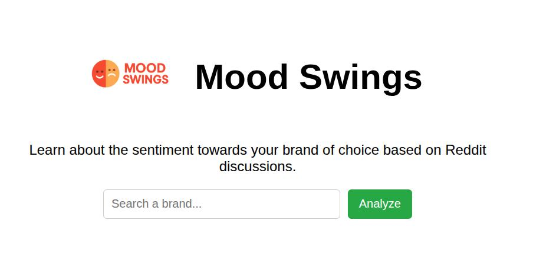

My Projects
Here are some of the projects I've worked on.

MoodSwings: AI Sentiment Analysis Web App
An interactive web app that scrapes Reddit content about any brand, analyzes sentiment using machine learning, and visualizes public opinion in real time.
Technologies Used:
Flask, React.js, Scikit-learn, PRAW, Chart.js
Challenges & Outcomes:
Handling noisy Reddit data posed challenges for accurate sentiment classification. By training a Naive Bayes model and integrating real-time scraping with a responsive frontend, our team delivered a fully functional tool that allows users to gauge brand sentiment.